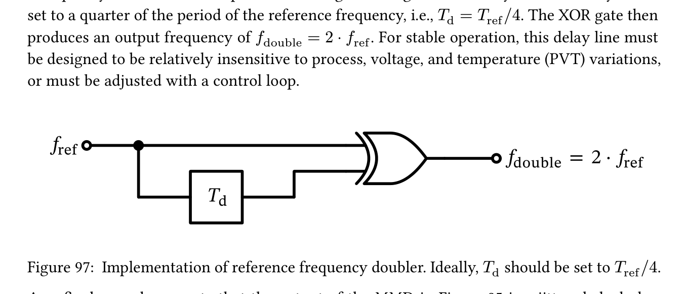
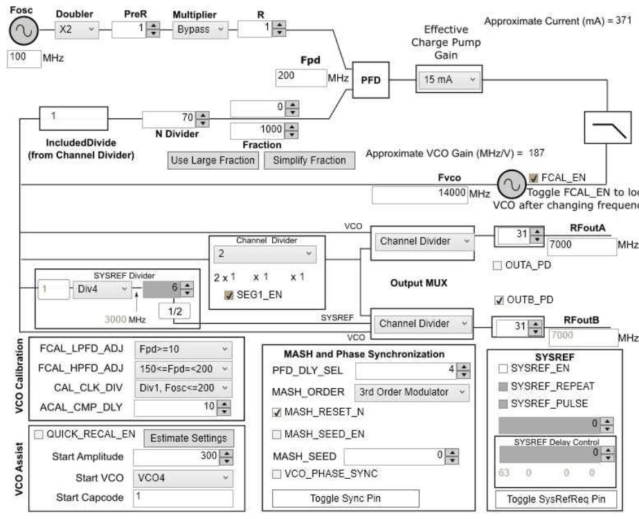

一张表算清频率链
参考输入经过倍频和分频到 PFD，反馈分频器把 VCO 送回同一频率比较。输出分频器位于另一条支路。

通用整数-N 频率链
设参考输入频率为 fREF。参考分频器 ÷R 决定 PFD 的比较频率；锁定后，反馈分频器 ÷N 的输出频率等于这个比较频率。输出分频器 ÷D 位于反馈取样点之后，决定最终端口读取的时钟频率。此处用 PD 标记比较节点。
ADI MT-086 · 第 8 页 Fig. 7(A)，整数-N 参考链与反馈链
ADI ADF4351 Rev. A · 第 21 页「RF Synthesizer—A Worked Example」，式 (3)–(4)、Fig. 30
怎么对照 ADF4351 手册。 图 30 显示反馈取样点在输出分频器之前。式 (3) 中的 INT 对应本页的 N，FRAC = 0 时是整数模式；RF Divider 对应本页的输出分频比 D。手册式 (4) 中的 D 是参考倍频开关，T 是参考二分频开关，两者都关闭时就得到参考频率除以 R。
例如参考为 100 MHz，R = 2、N = 80、D = 4。PFD 比较频率为 50 MHz，VCO 为 4 GHz，最终时钟输出为 1 GHz。只改 D 会改变输出端口频率，反馈链仍以 4 GHz 的 VCO 为基准。
TI LMX2594 的频率链
参考链有倍频、Pre-R、MULT 和 Post-R 四级。下面适用于默认配置的反馈路径，IncludedDivide 为 1。输出端要根据 MUX 选择决定是否经过通道分频器。
公开评估板的默认配置
| 节点 | 默认读数 |
|---|---|
| 参考输入 | 100 MHz |
| 倍频／参考分频 | OSC_2X = 2，Pre-R = 1，MULT 旁路，Post-R = 1 |
| PFD 与反馈 | 200 MHz，N = 70，NUM = 0，IncludedDivide = 1 |
| VCO 与 RFoutA | VCO 14 GHz；图中 RFoutA 经 ÷2 为 7 GHz |


下一页沿用这组参考频率，另外设置输出直通做教学计算。Fig. 5-1 的 14 GHz 相噪是另一项输出测试。评估板的 15 GHz 滤波器设计工况另列在 C3。